1. BLACK GRAM / 1.கருப்பு கிராம்
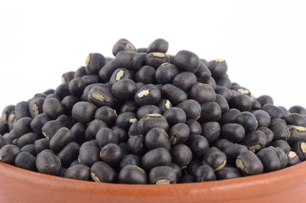
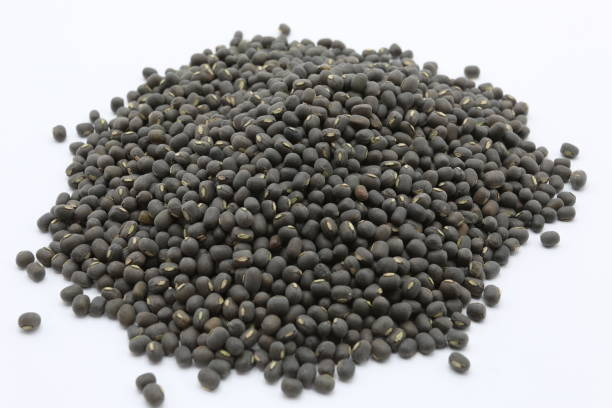
Black Gram, or Urad Dal, is primarily grown in Tamil Nadu during the Kharif season (June to September). It thrives in well-drained loamy or sandy soil with good fertility. Optimal soil temperature ranges from 25-30°C. Nutritionally, it’s rich in protein, fiber, and essential minerals. The cultivation window typically spans from September to January. It takes about 90-120 days to harvest, requiring moderate water and resources. Tamil Nadu is a major producer, while demand is high in states like Maharashtra and Karnataka due to their culinary uses. Its market share is significant in both local and national markets.
உளுந்து, அல்லது உளுந்து, முதன்மையாக காரீஃப் பருவத்தில் (ஜூன் முதல் செப்டம்பர் வரை) தமிழ்நாட்டில் விளைகிறது. இது நன்கு வடிகட்டிய களிமண் அல்லது மணல் மண்ணில் நல்ல வளத்துடன் செழித்து வளரும். உகந்த மண்ணின் வெப்பநிலை 25-30 ° C வரை இருக்கும். ஊட்டச்சத்து ரீதியாக, இதில் புரதம், நார்ச்சத்து மற்றும் அத்தியாவசிய தாதுக்கள் நிறைந்துள்ளன. சாகுபடி சாளரம் பொதுவாக செப்டம்பர் முதல் ஜனவரி வரை நீடிக்கும். அறுவடை செய்ய 90-120 நாட்கள் ஆகும், மிதமான நீர் மற்றும் வளங்கள் தேவை. தமிழ்நாடு ஒரு முக்கிய உற்பத்தியாளராக உள்ளது, அதே நேரத்தில் மகாராஷ்டிரா மற்றும் கர்நாடகா போன்ற மாநிலங்களில் அவற்றின் சமையல் பயன்பாடுகள் காரணமாக தேவை அதிகமாக உள்ளது. அதன் சந்தைப் பங்கு உள்ளூர் மற்றும் தேசிய சந்தைகளில் குறிப்பிடத்தக்கது.
2. GREEN GRAM / 2.பச்சை கிராம்
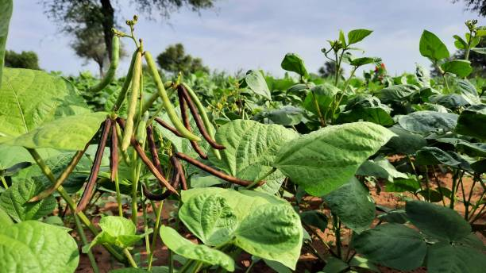
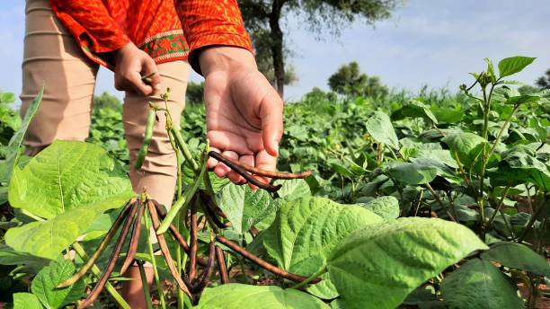
Green Gram, or Moong Dal, is primarily grown in Tamil Nadu during the Kharif season (June to September) and the Rabi season (October to December). It is widely cultivated and sold in Tamil Nadu, with significant market share also in Maharashtra and Uttar Pradesh. Green Gram thrives in well-drained, loamy or sandy soil, with optimal soil temperatures of 25-30°C. Nutritionally, it is rich in protein, fiber, and vitamins. The cultivation period is about 60-90 days, requiring moderate water and resources. Demand is particularly high in northern and western states due to its use in various culinary dishes.
பச்சைப்பயறு, அல்லது மூங் பருப்பு, முதன்மையாக காரீஃப் பருவத்தில் (ஜூன் முதல் செப்டம்பர் வரை) மற்றும் ராபி பருவத்தில் (அக்டோபர் முதல் டிசம்பர் வரை) தமிழ்நாட்டில் விளைகிறது. இது மஹாராஷ்டிரா மற்றும் உத்தரபிரதேசத்தில் குறிப்பிடத்தக்க சந்தைப் பங்கைக் கொண்டு, தமிழ்நாட்டில் பரவலாகப் பயிரிடப்பட்டு விற்கப்படுகிறது. பச்சைப்பயறு நன்கு வடிகட்டிய, களிமண் அல்லது மணல் மண்ணில், 25-30 டிகிரி செல்சியஸ் உகந்த மண் வெப்பநிலையுடன் செழித்து வளரும். ஊட்டச்சத்து ரீதியாக, இதில் புரதம், நார்ச்சத்து மற்றும் வைட்டமின்கள் நிறைந்துள்ளன. சாகுபடி காலம் சுமார் 60-90 நாட்கள் ஆகும், மிதமான நீர் மற்றும் வளங்கள் தேவை. பல்வேறு சமையல் உணவுகளில் பயன்படுத்தப்படுவதால், குறிப்பாக வடக்கு மற்றும் மேற்கு மாநிலங்களில் தேவை அதிகமாக உள்ளது.
3. RED GRAM / 3.சிவப்பு கிராம்
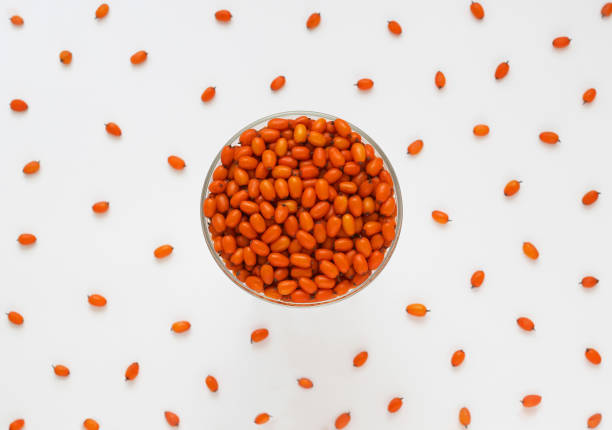
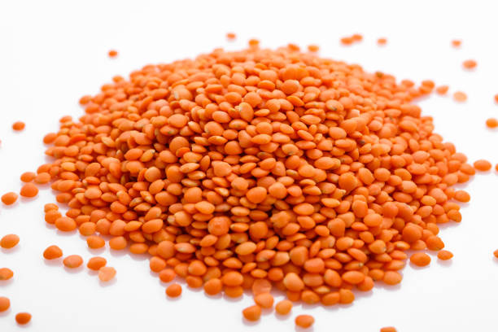
Red Gram, or Pigeon Pea, is primarily grown in Tamil Nadu during the Kharif season (June to September). It has a significant market share in Tamil Nadu, with high cultivation also in Maharashtra and Karnataka. Red Gram thrives in well-drained, sandy loam or clay loam soil, ideally with a temperature range of 25-30°C. Nutritionally, it is rich in protein, fiber, and essential minerals. The cultivation period is about 120-180 days, requiring moderate water and resources. Demand is particularly high in northern states like Uttar Pradesh and Bihar, where it is a staple in various dishes.
செம்பருத்தி, அல்லது புறா பட்டாணி, முதன்மையாக காரீஃப் பருவத்தில் (ஜூன் முதல் செப்டம்பர் வரை) தமிழ்நாட்டில் விளைகிறது. இது தமிழ்நாட்டில் குறிப்பிடத்தக்க சந்தைப் பங்கைக் கொண்டுள்ளது, மகாராஷ்டிரா மற்றும் கர்நாடகாவிலும் அதிக பயிரிடப்படுகிறது. செம்பருத்தி நன்கு வடிகட்டிய, மணல் கலந்த களிமண் அல்லது களிமண் களிமண் மண்ணில், 25-30 டிகிரி செல்சியஸ் வெப்பநிலையுடன் சிறப்பாக வளரும். ஊட்டச்சத்து ரீதியாக, இதில் புரதம், நார்ச்சத்து மற்றும் அத்தியாவசிய தாதுக்கள் நிறைந்துள்ளன. சாகுபடி காலம் சுமார் 120-180 நாட்கள் ஆகும், மிதமான நீர் மற்றும் வளங்கள் தேவை. குறிப்பாக உத்தரபிரதேசம் மற்றும் பீகார் போன்ற வட மாநிலங்களில் தேவை அதிகமாக உள்ளது, அங்கு இது பல்வேறு உணவுகளில் பிரதானமாக உள்ளது.
4. HORSE GRAM / 4.குதிரை கிராம்
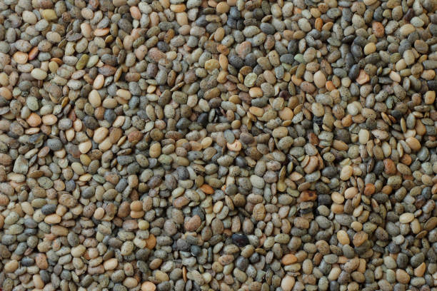
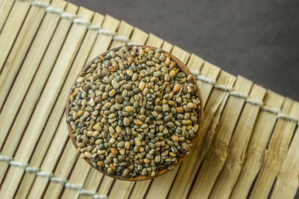
Horse Gram is primarily grown in Tamil Nadu during the Kharif season (June to September). It is extensively cultivated in Tamil Nadu, with significant market share also in Karnataka and Andhra Pradesh. Horse Gram thrives in well-drained, red or sandy loam soil, ideally with a temperature range of 25-30°C. Nutritionally, it is rich in protein, iron, and fiber. The cultivation period is about 90-120 days, requiring minimal water and resources, making it drought-resistant. Demand is particularly high in southern states and among health-conscious consumers due to its nutritional benefits and use in traditional dishes.
குதிரைவாலி முதன்மையாக காரீஃப் பருவத்தில் (ஜூன் முதல் செப்டம்பர் வரை) தமிழ்நாட்டில் விளைகிறது. இது தமிழ்நாட்டில் பரவலாக பயிரிடப்படுகிறது, கர்நாடகா மற்றும் ஆந்திராவிலும் குறிப்பிடத்தக்க சந்தைப் பங்கு உள்ளது. நன்கு வடிகட்டிய, சிவப்பு அல்லது மணல் கலந்த களிமண் மண்ணில், 25-30 டிகிரி செல்சியஸ் வெப்பநிலையுடன் குதிரை கிராம் செழித்து வளரும். ஊட்டச்சத்து ரீதியாக, இதில் புரதம், இரும்பு மற்றும் நார்ச்சத்து நிறைந்துள்ளது. சாகுபடி காலம் சுமார் 90-120 நாட்கள் ஆகும், குறைந்தபட்ச நீர் மற்றும் வளங்கள் தேவை, வறட்சியை எதிர்க்கும். அதன் ஊட்டச்சத்து நன்மைகள் மற்றும் பாரம்பரிய உணவுகளில் பயன்படுத்துவதன் காரணமாக தென் மாநிலங்களிலும், சுகாதார உணர்வுள்ள நுகர்வோர் மத்தியிலும் தேவை அதிகமாக உள்ளது.
5. GROUNDNUT / 5. நிலக்கடலை
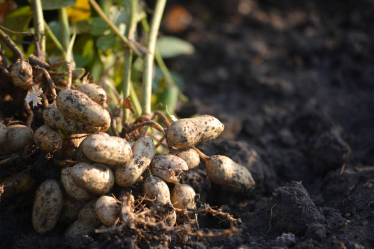
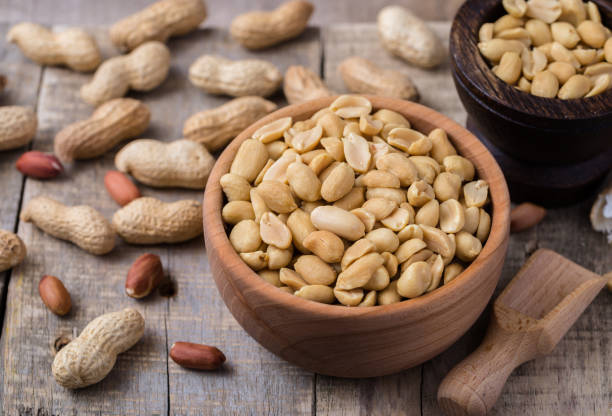
Groundnut, or peanut, is primarily grown in Tamil Nadu during the Kharif season (June to September). It has a significant market share in Tamil Nadu, with high cultivation also in Gujarat and Rajasthan. Groundnut thrives in well-drained, sandy or loamy soil, ideally with a temperature range of 25-30°C. Nutritionally, it is rich in protein, healthy fats, and vitamins. The cultivation period is about 120-150 days, requiring moderate water and resources. Demand is particularly high in states like Gujarat and Maharashtra, where it is used in various culinary applications and as a key ingredient in snacks and oils.
நிலக்கடலை அல்லது வேர்க்கடலை முதன்மையாக காரீஃப் பருவத்தில் (ஜூன் முதல் செப்டம்பர் வரை) தமிழ்நாட்டில் விளைகிறது. இது தமிழ்நாட்டில் குறிப்பிடத்தக்க சந்தைப் பங்கைக் கொண்டுள்ளது, குஜராத் மற்றும் ராஜஸ்தானிலும் அதிக பயிரிடப்படுகிறது. நிலக்கடலை நன்கு வடிகட்டிய, மணல் அல்லது களிமண் மண்ணில், 25-30 டிகிரி செல்சியஸ் வெப்பநிலையுடன் சிறப்பாக வளரும். ஊட்டச்சத்து ரீதியாக, இதில் புரதம், ஆரோக்கியமான கொழுப்புகள் மற்றும் வைட்டமின்கள் நிறைந்துள்ளன. சாகுபடி காலம் சுமார் 120-150 நாட்கள் ஆகும், மிதமான நீர் மற்றும் வளங்கள் தேவை. குறிப்பாக குஜராத் மற்றும் மகாராஷ்டிரா போன்ற மாநிலங்களில் தேவை அதிகமாக உள்ளது, அங்கு இது பல்வேறு சமையல் பயன்பாடுகளிலும், தின்பண்டங்கள் மற்றும் எண்ணெய்களில் முக்கிய மூலப்பொருளாகவும் பயன்படுத்தப்படுகிறது.
6. COCONUT / 6.தேங்காய்
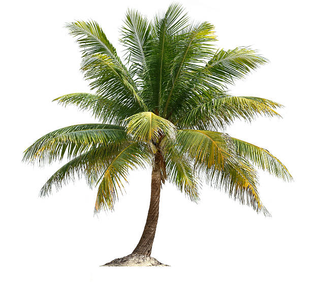
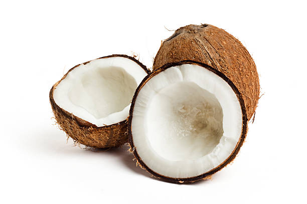
Coconut is grown year-round in Tamil Nadu, with peak production typically during the monsoon season. Tamil Nadu is a major producer, with significant market share also in Kerala and Karnataka. Coconut thrives in well-drained sandy loam or laterite soil, ideally with temperatures between 27-32°C. Nutritionally, it provides healthy fats, fiber, and essential vitamins. It takes about 6-7 years to start yielding fruit, requiring moderate water and resources. Demand is particularly high in Kerala and Maharashtra, where coconut is used in various culinary dishes, oil production, and traditional practices, making it a vital crop in these regions.
தமிழ்நாட்டில் தென்னை ஆண்டு முழுவதும் பயிரிடப்படுகிறது, பொதுவாக பருவமழை காலத்தில் அதிகபட்ச உற்பத்தி இருக்கும். தமிழ்நாடு ஒரு பெரிய உற்பத்தியாளராக உள்ளது, கேரளா மற்றும் கர்நாடகாவிலும் குறிப்பிடத்தக்க சந்தைப் பங்கைக் கொண்டுள்ளது. 27-32 டிகிரி செல்சியஸ் வெப்பநிலையுடன், நன்கு வடிகட்டிய மணல் களிமண் அல்லது லேட்டரைட் மண்ணில் தேங்காய் செழித்து வளரும். ஊட்டச்சத்து ரீதியாக, இது ஆரோக்கியமான கொழுப்புகள், நார்ச்சத்து மற்றும் அத்தியாவசிய வைட்டமின்களை வழங்குகிறது. மிதமான நீர் மற்றும் வளங்கள் தேவைப்படும் பழங்களை விளைவிக்க சுமார் 6-7 ஆண்டுகள் ஆகும். குறிப்பாக கேரளா மற்றும் மகாராஷ்டிராவில் தேவை அதிகமாக உள்ளது, அங்கு தேங்காய் பல்வேறு சமையல் உணவுகள், எண்ணெய் உற்பத்தி மற்றும் பாரம்பரிய நடைமுறைகளில் பயன்படுத்தப்படுகிறது, இது இந்த பிராந்தியங்களில் ஒரு முக்கிய பயிராக உள்ளது.
7. COTTON / 7.பருத்தி
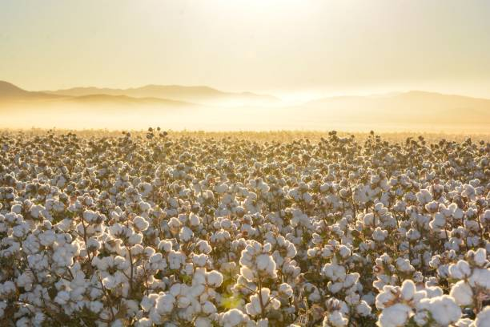
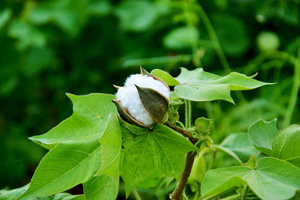
Cotton is primarily grown in Tamil Nadu during the Kharif season (June to September). Tamil Nadu has a significant market share, with major production also in Gujarat and Maharashtra. Cotton thrives in well-drained, fertile loamy or sandy soils, ideally with temperatures between 20-30°C. While not a food crop, it is vital for textiles and oil. The cultivation period is about 150-180 days, requiring moderate water and nutrients. Demand is particularly high in textile-centric states like Gujarat and Maharashtra, where it is used extensively in the garment industry, making it a crucial cash crop in the Indian economy.
பருத்தி முதன்மையாக காரீஃப் பருவத்தில் (ஜூன் முதல் செப்டம்பர் வரை) தமிழ்நாட்டில் விளைகிறது. தமிழ்நாடு குறிப்பிடத்தக்க சந்தைப் பங்கைக் கொண்டுள்ளது, குஜராத் மற்றும் மகாராஷ்டிராவிலும் அதிக உற்பத்தி உள்ளது. நன்கு வடிகட்டிய, வளமான களிமண் அல்லது மணல் மண்ணில், 20-30 டிகிரி செல்சியஸ் வெப்பநிலையுடன் பருத்தி செழித்து வளரும். உணவுப் பயிராக இல்லாவிட்டாலும், ஜவுளி மற்றும் எண்ணெய்க்கு இது இன்றியமையாதது. சாகுபடி காலம் சுமார் 150-180 நாட்கள் ஆகும், மிதமான நீர் மற்றும் ஊட்டச்சத்து தேவைப்படுகிறது. குறிப்பாக ஜவுளியை மையமாகக் கொண்ட குஜராத் மற்றும் மகாராஷ்டிரா போன்ற மாநிலங்களில் தேவை அதிகமாக உள்ளது, அங்கு இது ஆடைத் தொழிலில் அதிகமாகப் பயன்படுத்தப்படுகிறது, இது இந்தியப் பொருளாதாரத்தில் ஒரு முக்கியமான பணப்பயிராக அமைகிறது.
8. SUGARCANE / 8.கரும்பு
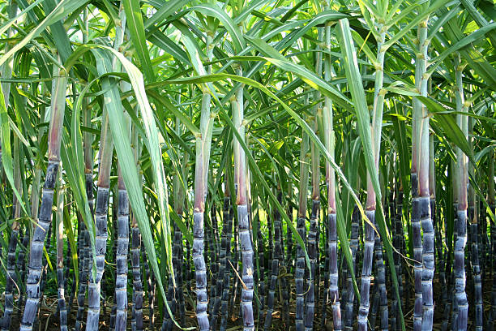
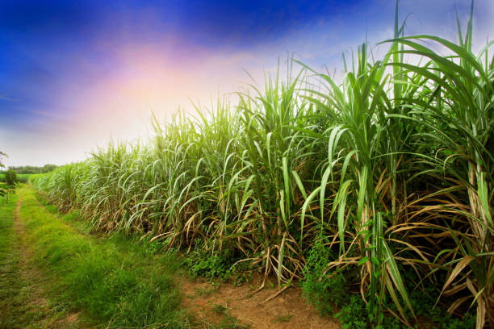
Sugarcane is primarily grown in Tamil Nadu during the Kharif season (June to September) and sometimes in the Rabi season (October to March). Tamil Nadu is a major producer, with significant market share also in Uttar Pradesh and Maharashtra. Sugarcane thrives in fertile, well-drained loamy or clayey soil, ideally with temperatures between 20-30°C. It requires ample water and nutrients for optimal growth. The cultivation period is about 12-18 months. Demand is particularly high in states like Uttar Pradesh and Maharashtra, where it is used for sugar production, jaggery, and various food products, making it a key cash crop.
கரும்பு முதன்மையாக தமிழ்நாட்டில் காரீஃப் பருவத்தில் (ஜூன் முதல் செப்டம்பர் வரை) மற்றும் சில நேரங்களில் ராபி பருவத்தில் (அக்டோபர் முதல் மார்ச் வரை) பயிரிடப்படுகிறது. தமிழ்நாடு ஒரு முக்கிய உற்பத்தியாளராக உள்ளது, உத்தரப்பிரதேசம் மற்றும் மகாராஷ்டிராவிலும் குறிப்பிடத்தக்க சந்தைப் பங்கைக் கொண்டுள்ளது. கரும்பு வளமான, நன்கு வடிகட்டிய களிமண் அல்லது களிமண் மண்ணில், 20-30 டிகிரி செல்சியஸ் வெப்பநிலையுடன் சிறப்பாக வளரும். இது உகந்த வளர்ச்சிக்கு போதுமான நீர் மற்றும் ஊட்டச்சத்து தேவைப்படுகிறது. சாகுபடி காலம் சுமார் 12-18 மாதங்கள். குறிப்பாக உத்தரபிரதேசம் மற்றும் மகாராஷ்டிரா போன்ற மாநிலங்களில் தேவை அதிகமாக உள்ளது, அங்கு சர்க்கரை உற்பத்தி, வெல்லம் மற்றும் பல்வேறு உணவுப் பொருட்களுக்கு இது பயன்படுத்தப்படுகிறது, இது ஒரு முக்கிய பணப்பயிராக அமைகிறது.
9. TEA / 9.டீ
 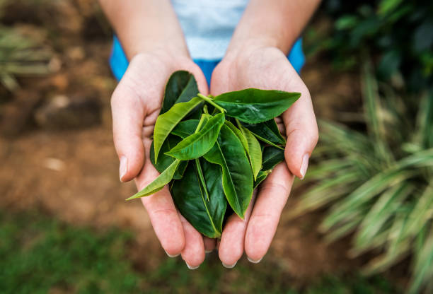
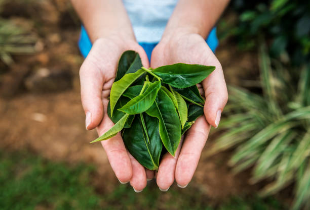
Tea is primarily grown in Tamil Nadu during the monsoon season (May to September) and harvested throughout the year. Tamil Nadu is a significant producer, with high market share also in Assam and West Bengal. Tea thrives in well-drained, acidic soils, ideally at elevations between 1,200 to 2,200 meters, with temperatures around 20-30°C. It requires consistent rainfall and rich nutrients for optimal growth. The plants take about 3-5 years to mature for harvesting. Demand is particularly high in states like Assam and West Bengal, where tea is a staple beverage and integral to local culture and economy.
தேயிலை முதன்மையாக தமிழ்நாட்டில் பருவமழை காலத்தில் (மே முதல் செப்டம்பர் வரை) பயிரிடப்படுகிறது மற்றும் ஆண்டு முழுவதும் அறுவடை செய்யப்படுகிறது. அஸ்ஸாம் மற்றும் மேற்கு வங்கத்தில் அதிக சந்தைப் பங்கைக் கொண்டு தமிழ்நாடு ஒரு குறிப்பிடத்தக்க உற்பத்தியாளராக உள்ளது. 20-30 டிகிரி செல்சியஸ் வெப்பநிலையுடன், 1,200 முதல் 2,200 மீட்டர் உயரத்தில், நன்கு வடிகட்டிய, அமில மண்ணில் தேயிலை செழித்து வளரும். உகந்த வளர்ச்சிக்கு சீரான மழை மற்றும் வளமான ஊட்டச்சத்துக்கள் தேவை. தாவரங்கள் அறுவடைக்கு முதிர்ச்சியடைய சுமார் 3-5 ஆண்டுகள் ஆகும். குறிப்பாக அஸ்ஸாம் மற்றும் மேற்கு வங்கம் போன்ற மாநிலங்களில் தேவை அதிகமாக உள்ளது, அங்கு தேநீர் ஒரு முக்கிய பானமாகவும், உள்ளூர் கலாச்சாரம் மற்றும் பொருளாதாரத்திற்கு ஒருங்கிணைந்ததாகவும் உள்ளது.
10. COFFEE / 10.காபி
 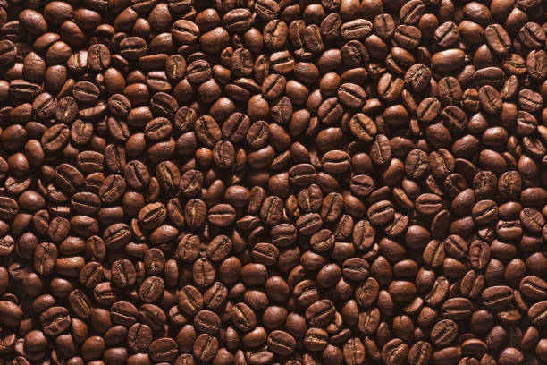
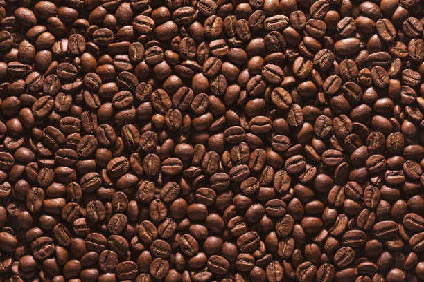
Coffee is primarily grown in Tamil Nadu during the monsoon season (May to September). The state has a significant market share, especially in the Nilgiri hills, with high cultivation also in Karnataka and Kerala. Coffee thrives in well-drained, loamy or red soil, ideally at elevations between 800 to 1,500 meters, with temperatures around 15-24°C. It requires moderate rainfall and rich nutrients for optimal growth. Coffee plants typically take 3-4 years to bear fruit. Demand is particularly high in southern states, especially Karnataka, where coffee is a major cash crop and integral to local culture and economy.
காபி முதன்மையாக தமிழ்நாட்டில் பருவமழை காலத்தில் (மே முதல் செப்டம்பர் வரை) விளைகிறது. குறிப்பாக நீலகிரி மலைகளில், கர்நாடகா மற்றும் கேரளாவில் அதிக சாகுபடியுடன், மாநிலம் குறிப்பிடத்தக்க சந்தைப் பங்கைக் கொண்டுள்ளது. காபி நன்கு வடிகட்டிய, களிமண் அல்லது சிவப்பு மண்ணில், 800 முதல் 1,500 மீட்டர் உயரத்தில் 15-24 டிகிரி செல்சியஸ் வெப்பநிலையுடன் சிறப்பாக வளரும். உகந்த வளர்ச்சிக்கு மிதமான மழைப்பொழிவு மற்றும் வளமான ஊட்டச்சத்துக்கள் தேவை. பொதுவாக காபி செடிகள் காய்க்க 3-4 ஆண்டுகள் ஆகும். குறிப்பாக தென் மாநிலங்களில், குறிப்பாக கர்நாடகாவில் தேவை அதிகமாக உள்ளது, அங்கு காபி ஒரு முக்கிய பணப்பயிராகவும், உள்ளூர் கலாச்சாரம் மற்றும் பொருளாதாரத்திற்கு ஒருங்கிணைந்ததாகவும் உள்ளது.
11. TOBACCO / 11.புகையிலை
 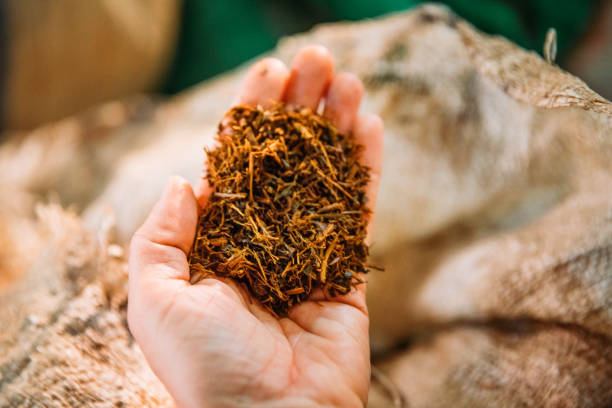
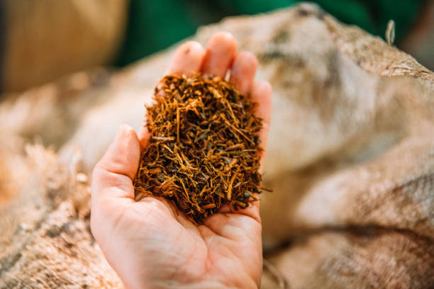
Tobacco is primarily grown in Tamil Nadu during the Kharif season (June to September). The state has a significant market share, especially in districts like Virudhunagar, with major cultivation also in Andhra Pradesh and Karnataka. Tobacco thrives in well-drained, sandy loam or black soils, ideally with temperatures between 20-30°C. It requires moderate rainfall and nutrients for optimal growth. The cultivation period is about 4-6 months. Demand is particularly high in states like Andhra Pradesh and Karnataka, where tobacco is used for various products, including cigarettes and bidis, making it an important cash crop in the region.
காரீஃப் பருவத்தில் (ஜூன் முதல் செப்டம்பர் வரை) தமிழ்நாட்டில் புகையிலை முதன்மையாக விளைகிறது. மாநிலம் குறிப்பிடத்தக்க சந்தைப் பங்கைக் கொண்டுள்ளது, குறிப்பாக விருதுநகர் போன்ற மாவட்டங்களில், ஆந்திரப் பிரதேசம் மற்றும் கர்நாடகாவிலும் அதிக சாகுபடி செய்யப்படுகிறது. புகையிலை நன்கு வடிகட்டிய, மணல் கலந்த களிமண் அல்லது கருப்பு மண்ணில், 20-30 டிகிரி செல்சியஸ் வெப்பநிலையுடன் சிறப்பாக வளரும். மிதமான மழைப்பொழிவு மற்றும் உகந்த வளர்ச்சிக்கு ஊட்டச்சத்துக்கள் தேவை. சாகுபடி காலம் சுமார் 4-6 மாதங்கள். குறிப்பாக ஆந்திரா மற்றும் கர்நாடகா போன்ற மாநிலங்களில் தேவை அதிகமாக உள்ளது, அங்கு புகையிலை சிகரெட் மற்றும் பீடி உள்ளிட்ட பல்வேறு பொருட்களுக்கு பயன்படுத்தப்படுகிறது, இது பிராந்தியத்தில் ஒரு முக்கிய பணப்பயிராக அமைகிறது.